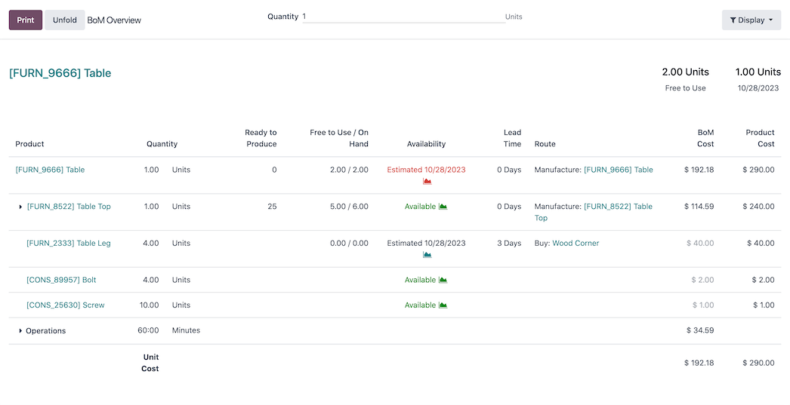
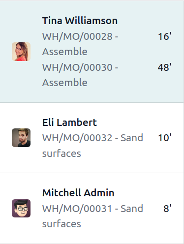
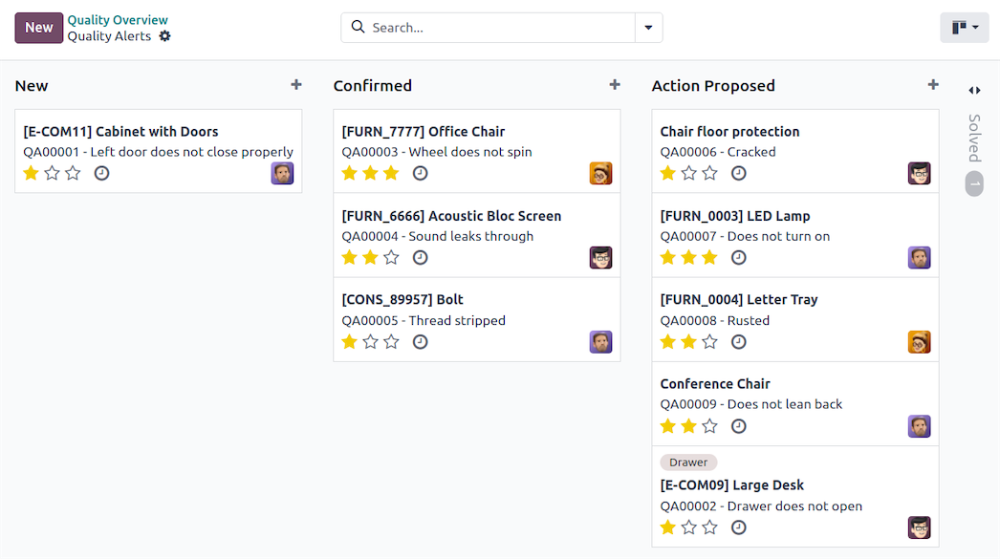

TechNext models each of Auntie Gaik Lean's dishes as a recipe in Odoo — so a plate of Curry Kapitan draws down its exact ingredients, and you always know what it truly costs to make.
Plan a prep run and Odoo shows you, in real time, whether you have the ingredients, the capacity and the cost. It even suggests what to buy or make to fill any gap.

Schedule prep and sub-recipes against the kitchen's real capacity, and fine-tune the timeline on a simple drag-and-drop chart so everything is ready before the first table sits.

A quick tap on a tablet or scanner. The kitchen records what it produced and used as it goes — fast, offline-friendly, and far fewer keying mistakes than a paper sheet.




One screen at each station. The Shop Floor view organises who's on, which station they're at, the prep worksheet and the quality checks — so the line runs off a tablet instead of a clipboard.
Build taste, temperature and portion checks into the prep steps, and let the team flag waste as they spot it. Over time you can see exactly where quality slips — and fix it.


A master schedule lines up what the kitchen will produce with what the floor expects to sell.

Capture by-products from a recipe — bones to stock, trim to sambal — instead of letting them go to waste.
Powerful under the hood, but easy enough that the kitchen doesn't need heavy training to use it.
Track ingredients by batch or lot and trace every prep step in a click — good for food-safety confidence.
Link scales, label printers and probes so measurements and labels are captured automatically.
Recipes tie into stock and sales, so producing and selling a dish keeps ingredient levels honest.